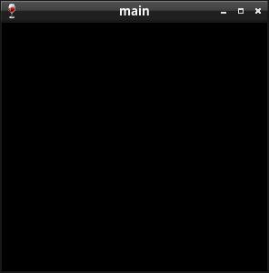

Steward
分享是一種喜悅、更是一種幸福
程式語言 - Netwide Assembler (NASM) - Win32 API - Single Document Interface (SDI) - Handle Event
參考資訊：
https://masm32.com/board/index.php
https://www.nasm.us/xdoc/2.13rc9/html/nasmdoc0.html
當視窗有事件需要被處理時，系統會透過呼叫註冊的Callback副程式來處理，而這個Callback副程式就是在註冊Class時，設定給lpfnWndProc的事件處理副程式，因此，當這個事件處理副程式被呼叫時，可以處理自己感興趣的事件，而其餘事件則交給系統處理(透過呼叫DefWindowProc())，需要注意的是，例如：WM_CLOSE，就必須由該視窗自己處理，因為系統無法知道還有哪些額外的資源需要被釋放掉
main.asm
%include "head.asm"
segment .text
WndProc:
push ebp
mov ebp, esp
cmp dword [ebp + ARG2], WM_CLOSE
je .handle_close
cmp dword [ebp + ARG2], WM_DESTROY
je .handle_destroy
jmp .handle_default
.handle_close:
push dword [ebp + ARG1]
call DestroyWindow
xor eax, eax
jmp .finish
.handle_destroy:
push 0
call PostQuitMessage
xor eax, eax
jmp .finish
.handle_default:
push dword [ebp + ARG4]
push dword [ebp + ARG3]
push dword [ebp + ARG2]
push dword [ebp + ARG1]
call DefWindowProc
.finish:
leave
ret 16
WinMain:
push ebp
mov ebp, esp
mov dword [wndClass + WNDCLASS.lpfnWndProc], WndProc
mov dword [wndClass + WNDCLASS.lpszClassName], szAppName
push wndClass
call RegisterClass
push 0
push 0
push 0
push 0
push 300
push 300
push 0
push 0
push WS_OVERLAPPEDWINDOW | WS_VISIBLE
push szAppName
push szAppName
push WS_EX_LEFT
call CreateWindowEx
mov [hWin], eax
.loop:
push 0
push 0
push 0
push msg
call GetMessage
cmp eax, 0
je .exit
push msg
call DispatchMessage
jmp .loop
.exit:
mov eax, [msg + MSG.wParam]
leave
ret 16
_start:
push 0
call GetModuleHandle
mov [hInstance], eax
call GetCommandLine
mov [pCommand], eax
push SW_SHOWNORMAL
push dword [pCommand]
push 0
push dword [hInstance]
call WinMain
push eax
call ExitProcess
Line 14~24：關閉視窗的順序為：主視窗收到WM_CLOSE事件時，呼叫DestroyWindow()，DestroyWindow()會自動將子視窗的相關資源也一併釋放掉(包含Resource描述的資源)，系統接著會發送WM_DESTROY事件給主視窗，待主視窗收到WM_DESTROY事件時，呼叫PostQuitMessage()結束視窗，值得注意的地方是，SendMessage()是屬於Block方式呼叫(必須等待動作執行完畢才返回)，而PostQuitMessage()則是Non-block方式呼叫
Line 26~31：其餘事件由系統代為處理
完成
